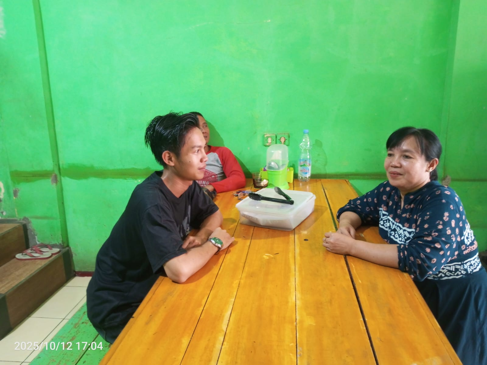

Nama: Riyan Restu Mulyana
NIM: 222511028
Kelas: BD-NR-7
Judul: Digitalisasi Layanan Pemesanan di Warung Makan Ibu Ai
Bukti sudah wawancara:
Ibu Ai sebagai pemilik Warung Makan masih melakukan seluruh kegiatan usaha secara manual, termasuk pencatatan pesanan, pengelolaan stok, dan pemberian informasi menu kepada pelanggan. Hal ini menyebabkan proses pelayanan menjadi lambat, pelanggan sering menanyakan menu berulang kali, dan terkadang terjadi kesalahan pencatatan pesanan.
Berikut daftar ide solusi yang muncul selama proses brainstorming:
| No | Ide Solusi | Deskripsi Singkat |
|---|---|---|
| 1 | Sistem Menu Digital Berbasis QR Code | Pelanggan dapat melihat daftar menu, harga, dan ketersediaan makanan melalui QR Code yang dipindai dari smartphone. |
| 2 | Aplikasi Pencatatan Pesanan Otomatis | Setiap pesanan pelanggan langsung tercatat di sistem tanpa harus menulis manual. |
| 3 | Notifikasi Pesanan Masuk | Sistem memberi notifikasi otomatis ke HP Ibu Ai setiap kali ada pesanan baru. |
| 4 | Integrasi Pesan WhatsApp Otomatis | Pelanggan bisa memesan lewat WhatsApp dan sistem akan otomatis mencatat pesan tersebut di daftar pesanan. |
| 5 | Dashboard Stok Bahan Masakan | Menampilkan sisa bahan masakan harian agar Ibu Ai tahu kapan harus belanja lagi. |
Metode yang digunakan: Impact / Effort Matrix
| Ide | Impact | Effort | Hasil |
|---|---|---|---|
| 1. Sistem Menu Digital Berbasis QR Code | Tinggi | Sedang | ✅ Terpilih |
| 2. Aplikasi Pencatatan Pesanan Otomatis | Tinggi | Tinggi | ✅ Cadangan |
| 3. Notifikasi Pesanan Masuk | Tinggi | Rendah | ✅ Terpilih |
| 4. Integrasi Pesan WhatsApp Otomatis | Sedang | Rendah | ✅ Terpilih |
| 5. Dashboard Stok Bahan Masakan | Sedang | Tinggi | ❌ Tidak |
Nama Solusi: Smart Warung Menu
Deskripsi Singkat: Smart Warung Menu adalah sistem menu digital berbasis QR Code yang memungkinkan pelanggan melihat daftar menu dan harga secara mandiri melalui smartphone. Sistem ini juga mencatat pesanan secara otomatis dan memberikan notifikasi ke HP Ibu Ai jika ada pesanan baru, sehingga pelayanan menjadi lebih cepat dan efisien.
Target User: Pelanggan Warung Makan Ibu Ai dan Pemilik Warung (Ibu Ai).
Manfaat Utama:
Sketsa / Visualisasi (alur sederhana):
Alur: Pelanggan scan QR Code di meja → Menu muncul di HP → Pelanggan pilih menu → Pesanan dikirim otomatis ke HP Ibu Ai → Ibu Ai konfirmasi dan proses pesanan.
Apa tantangan saat brainstorming?
Tantangannya adalah memilih ide yang paling sederhana namun tetap efektif, karena banyak ide bagus tetapi
sulit diterapkan oleh usaha kecil seperti warung.
Mengapa solusi ini yang dipilih?
Karena sistem menu digital berbasis QR Code paling sesuai dengan kebutuhan Ibu Ai. Solusi ini mudah
diterapkan, tidak mahal, dan langsung menjawab masalah utama yaitu pelanggan sering menanyakan menu dan
harga.
Bagaimana solusi ini relevan dengan bidang Bisnis Digital & Komputer?
Solusi ini memanfaatkan teknologi digital untuk meningkatkan efisiensi usaha kecil. Dengan sistem informasi
sederhana, pelaku UMKM dapat meningkatkan pelayanan, mempercepat transaksi, dan menyesuaikan diri dengan era
digital.